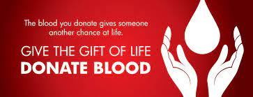

*MAIN PURPOSE OF BLOOD DONATION CAMPS [ONE DONOR CAN SAVE ONE LIFE]:
*For your kind information:
Blood donation is a practice when people donate blood to others to help them with their medical conditions. Apart from saving lives, donating blood is also a life saving and humanitarian gesture that displays solidarity with others and a concern for their problems and suffering. There could be several different reasons behind a person’s requirement of blood. The need for blood could arise due to an illness or an accident. Whatsoever the reason could be; blood donation is the only feasible solution. Blood donation is not only beneficial for the recipient but also helps the donor and the society as well. Donating blood is an act of concern for those who are in need of life-saving blood. Nothing could value more than blood for a person who requires it for saving his/her own life or for the life of someone he/she truly cares for. Any healthy individual, who isn’t suffering from any disease, can donate blood; however, there should be a gap of at least three months between two consecutive blood donations. It is also advisable that individuals below 18 years or above 60 should avoid donating blood. It is also highly advisable to don’t conceal any information regarding your health history and medications, from the doctor supervising the blood donation.
*About The Blood Camp Details/Schedule:
| DATE | TIME | DAY | LOCATION |
|---|---|---|---|
| 22-DEC-2022 | 10:00AM - 5:00PM | Thursday | SGL Superspeciality Hospital(Punjab) |
| 24-DEC-2022 | 11:00AM - 4:00PM | Saturday | Capitol Hospital - Best Multi Super Speciality Hospital in Jalandhar(Punjab) |
| 25-DEC-2022 | 11:00AM - 6:00PM | Sunday | Tagore Hospital & Heart Care Centre Private Limited(Punjab) |
| 28-DEC-2022 | 10:00AM - 5:00PM | Wednesday | Navjivan Maternity & General Hospital(Punjab) |
| 29-DEC-2022 | 11:00AM - 4:00PM | Friday | Aanand Hospital(Punjab) |
| 3-JAN-2023 | 11:00AM - 4:00PM | Saturday | Joshi Hospital Jalandhar.(Punjab) |
